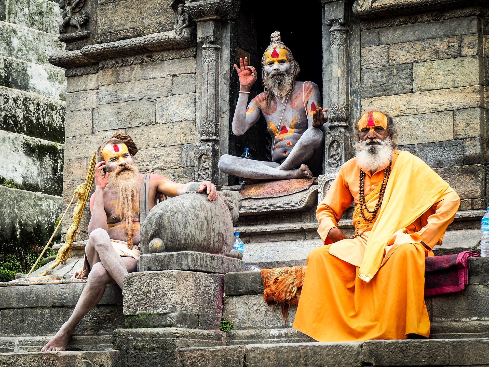

For many, stepping off a plane into Kathmandu is a pupil-dilating experience, a riot of sights, sounds and smells that can quickly lead to sensory overload. Whether you’re barrelling through the traffic-jammed alleyways of the old town in a rickshaw, marvelling at the medieval temples or dodging trekking touts in the backpacker district of Thamel, Kathmandu can be an intoxicating, amazing and exhausting place.
Located 22km west of Siddharthanagar (Bhairawa), Lumbini was the birthplace of one of history’s most revered figures, Siddhartha Gautama – better known as the historical Buddha – in the 7th century BC. During the years following the Buddha's lifetime, this was a teeming monastic complex and a major place of pilgrimage, but the site was lost to history until the discovery in 1896 of an inscribed pillar left behind by the Buddhist emperor Ashoka, amidst a sea of monastery ruins.
Pokhara ticks all the right boxes, with spectacular scenery, adventure activities, and accommodation and food choices galore. Whether you’ve returned from a three-week trek or endured a bus trip from hell, Lakeside Pokhara is the perfect place to recharge your batteries.
Chitwan National Park is one of the premier drawcards in Nepal. This World Heritage–listed reserve protects more than 932 sq km of forests, marshland and grassland containing sizeable animal populations, making it one of the best national parks for viewing wildlife in Asia. You'll have an excellent chance of spotting one-horned rhinos, deer, monkeys and some of the more than 500 species of birds. If you’re extremely lucky, you may spot a leopard, wild elephant or sloth bear – though it’s the once-in-a-lifetime chance to spot a majestic royal Bengal tiger that is the premier attraction.
Part of the Nilgiri Biosphere Reserve, Bandipur National Park is one of South India’s most famous wilderness areas. Covering 880 sq km, it was once the Mysuru maharajas’ private wildlife reserve, and is now a protected zone for more than 100 species of mammal, including tigers, elephants, leopards, gaurs (Indian bison), chitals (spotted deer), sambars, sloth bears, dholes, mongooses and langurs.